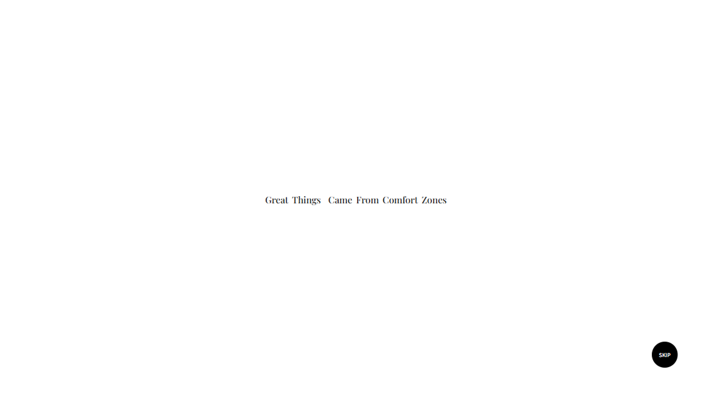
01
Intro Typography
첫 진입 화면은 이미지 없이 문장과 여백만으로 시작해 메시지의 집중도를 높였습니다. ‘Never’가 삽입되며 문장의 의미가 완성되도록 연출하여 단순한 문장을 브랜드의 철학으로 전환시켰습니다.
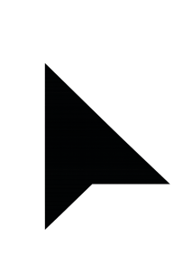
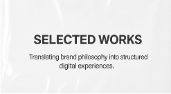
헉슬리의 브랜드 슬로건을 기반으로, '안락함을 벗어난 극한 환경에서의 발견'이라는 메시지를 웹 인터랙션으로 재해석했습니다.

첫 진입 화면은 이미지 없이 문장과 여백만으로 시작해 메시지의 집중도를 높였습니다. ‘Never’가 삽입되며 문장의 의미가 완성되도록 연출하여 단순한 문장을 브랜드의 철학으로 전환시켰습니다.
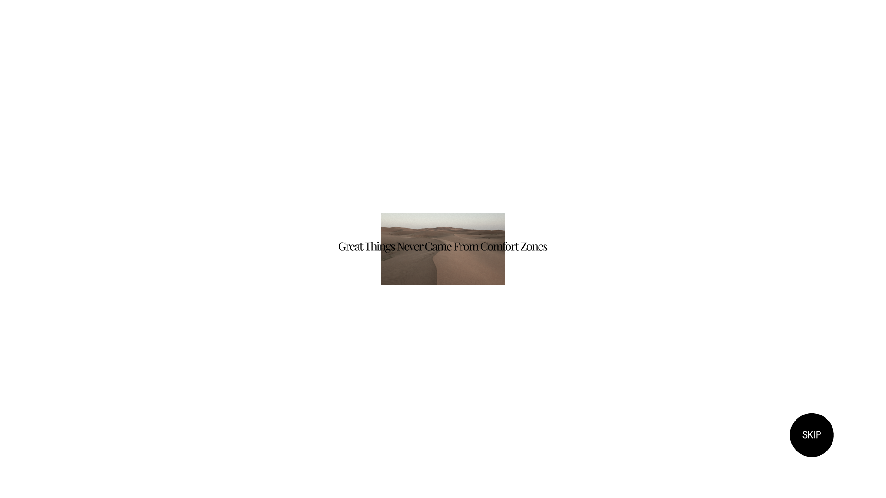
이후 사막 이미지를 점진적으로 등장시키며 텍스트 중심에서 비주얼 중심으로 자연스럽게 전환했습니다. 사막 이미지 위에 미세한 노이즈를 더해 극한 환경의 질감을 시각적으로 보완했습니다.
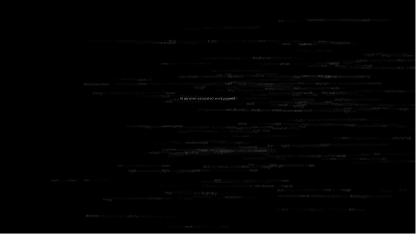
흑백 사막 배경을 통해 시선을 텍스트에 집중시키고, ‘Great Things’와 ‘Comfort Zones’의 대비 구조를 강조했습니다.
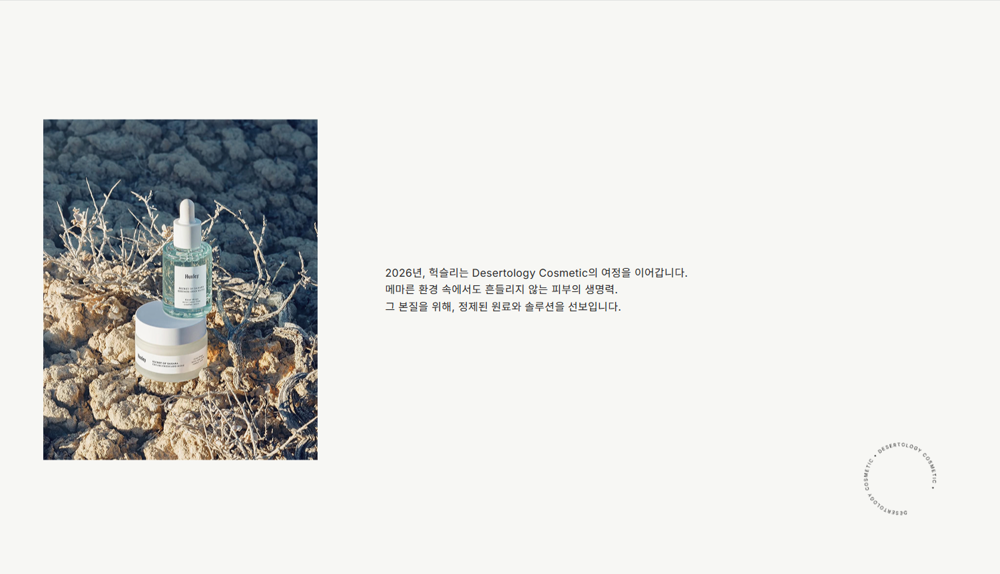
‘Great Things’를 ‘New’로, ‘Comfort Zones’를 ‘Best Seller’로 전환해 브랜드 슬로건을 제품 탐색 기준으로 확장했습니다. 이를 통해 사용자가 단순한 나열이 아닌, 브랜드가 제안하는 기준에 따라 제품을 인지하도록 구성했습니다.
올더스 헉슬리의 <멋진 신세계>에서 예견된 정보 과잉 시대에 대한 통찰을 바탕으로,
정보 과잉 → 본질 정제 → 제품 → 브랜드의 시간으로 이어지는 흐름을 설계하고 이를 인터랙션 경험으로 재해석했습니다.
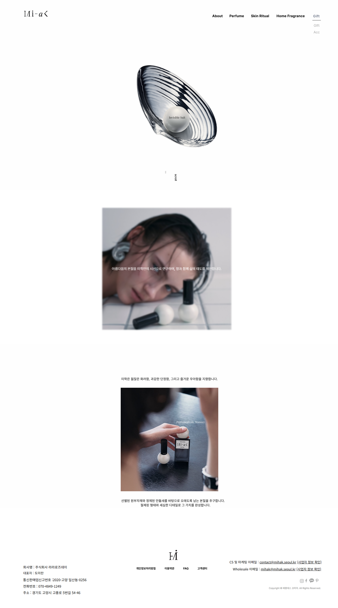
도심 환경에서 발생하는 피부 스트레스를 단어 노이즈로 분산시키고, “in an over-saturated environment” 문장을 통해 혼란을 하나의 인식으로 압축했습니다. 텍스트를 시각적 노이즈로 활용해 사용자가 과부하 상태를 직접 체감하도록 구성했습니다.
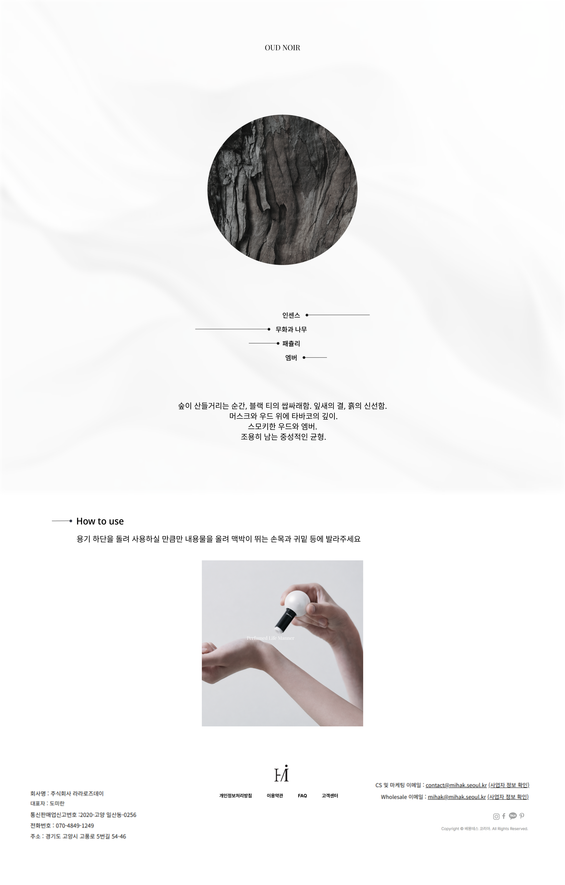
노이즈에서 정제된 상태로 전환되는 흐름을 통해 브랜드가 지향하는 필터링의 태도를 드러내고, “beyond the noise” 메시지를 통해 문제에서 해결로 이어지는 구조를 완성했습니다.
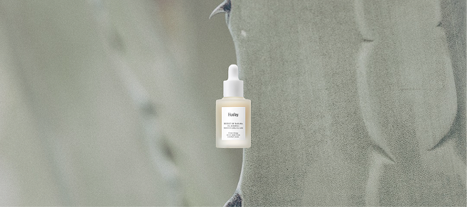
브랜드를 상징하는 선인장 배경 위에 제품을 배치해, 척박한 환경에서도 지속되는 생명력을 드러냈습니다. 이를 통해 피부 본연의 힘에 대한 브랜드 관점을 제시하고, 철학이 제품으로 이어지는 출발점을 구성했습니다.
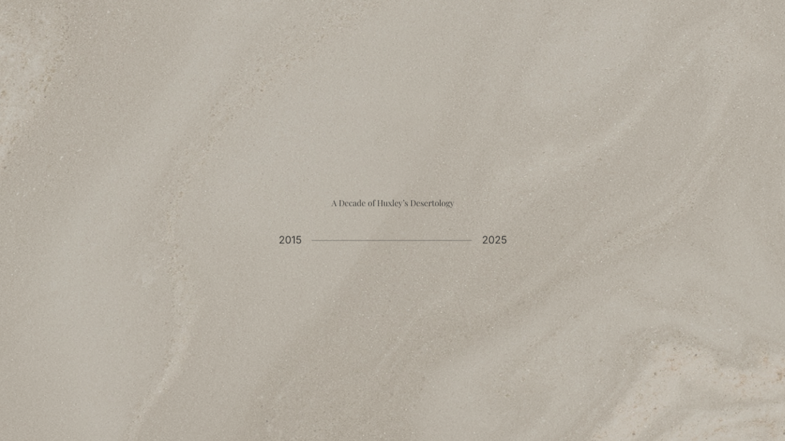
사막 모래 텍스처를 바탕으로 2015년부터 2025년까지의 시간을 간결하게 압축해, 브랜드가 축적해온 흐름을 드러냈습니다.

건조한 사막 위에 놓인 제품을 통해 선인장의 생명력을 바탕으로 완성된 스킨케어를 드러냈습니다. 2026년 메시지와 순환하는 타이포그래피를 통해 브랜드의 여정이 현재에도 이어지고 있음을 표현했습니다.
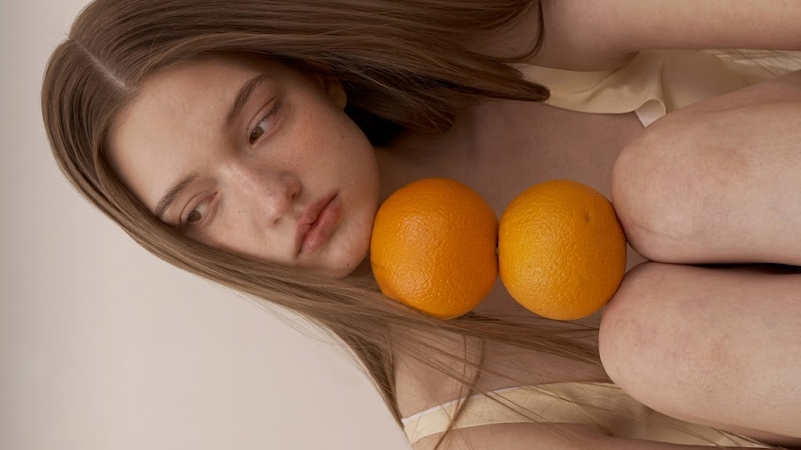
Bitter Orange의 첫 인상을 담은 인트로 비주얼로 시즌 캠페인의 감각적인 흐름을 시작합니다.
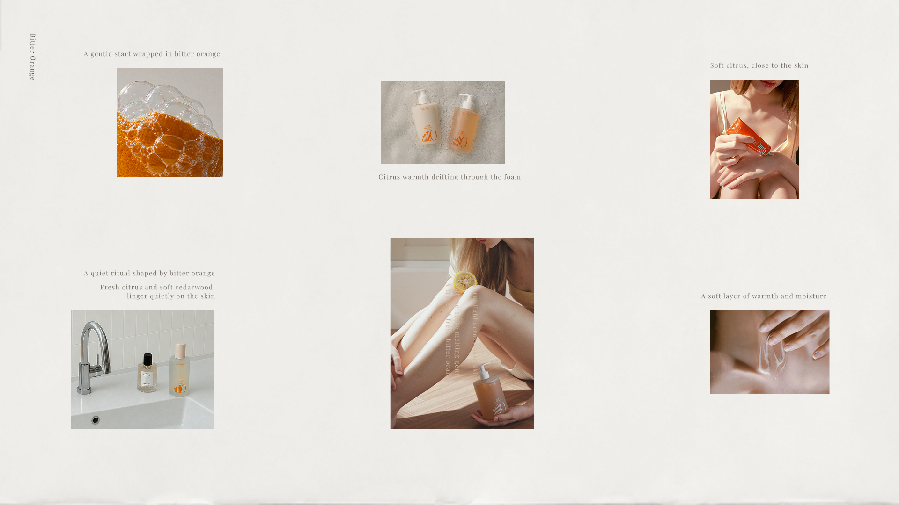
따뜻한 시트러스 향과 피부의 온도를 중심으로, Bitter Orange의 리추얼 무드를 에디토리얼 아카이브 형식으로 확장했습니다.
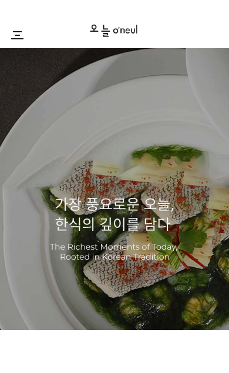
샤워와 바디케어, 그리고 하루의 작은 순간들을 Daily Ritual이라는 키워드로 연결해 따뜻한 리추얼 아카이브 형식으로 구성했습니다.
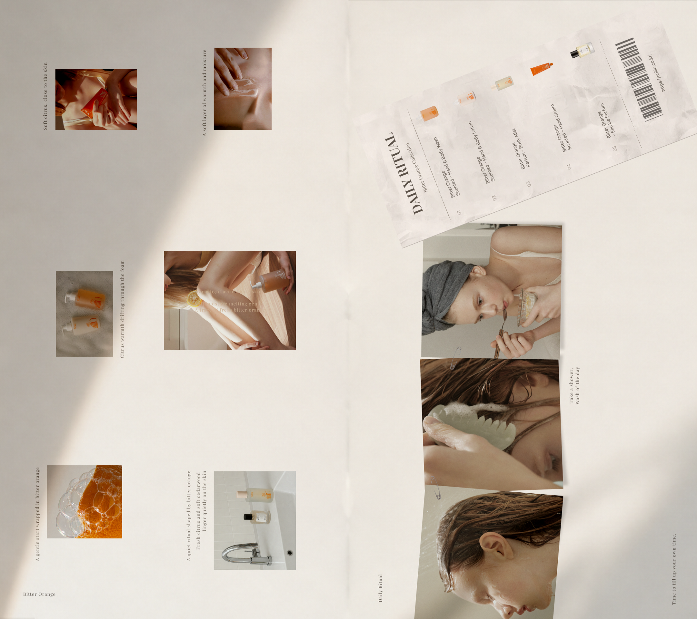
윗면과 아랫면의 아카이브 페이지를 하나의 화면으로 펼쳐 보여주며, Bitter Orange에서 Daily Ritual로 이어지는 시즌 캠페인의 전체 흐름을 정리했습니다.
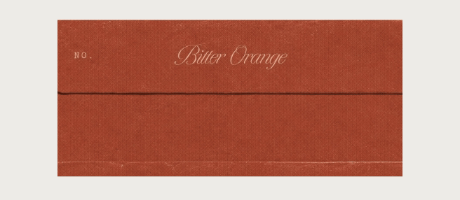
기존 브랜드 비주얼 에셋을 활용해 Bitter Orange, Daily Ritual, Evening Unwind가 순차적으로 이어지며 하루의 리추얼이 조용히 마무리되는 흐름을 표현했습니다.
브랜드 미학의 ‘Perfumed Life Manner’ 철학을 기반으로, 2025년 리뉴얼을 통해 확장된 ‘Invisible Suit’ 개념을 스크롤 기반 인터랙션으로 풀어냈습니다. 이미지 전환과 텍스트 타이밍, 절제된 모션을 통해 향의 잔향처럼 남는 감각을 전달했습니다.

기존 제품 비주얼을 기반으로 진주와 조개 오브제를 중심에 배치해 브랜드의 상징성을 강화했습니다. 호버 인터랙션을 통해 ‘Invisible Suit’ 슬로건이 드러나도록 구성해, 향을 ‘입는 태도’로 확장되는 개념을 경험할 수 있도록 했습니다.
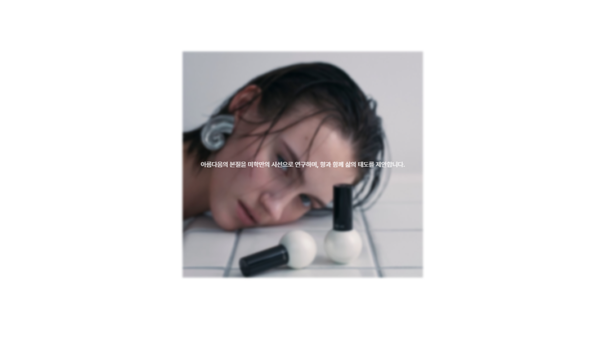
이미지를 먼저 인지한 뒤 텍스트가 이어지도록 구성해 시선의 흐름을 단계적으로 설계했습니다. 사선 구도와 흐트러진 시선을 따라 스크롤 시 이미지가 자연스럽게 좌측으로 이동하며 다음 콘텐츠로 이어지도록 유도했습니다.
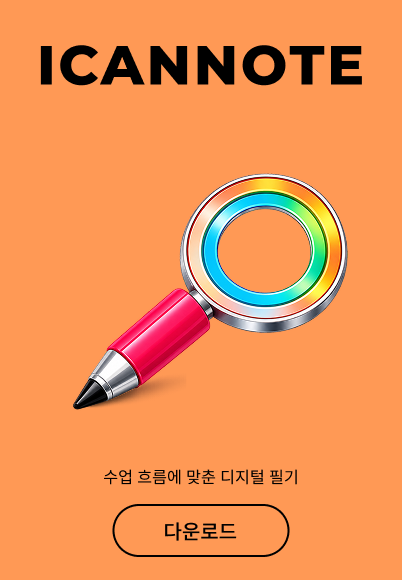
‘Invisible Suit’를 중심으로 브랜드의 핵심 가치를 제시하고, 감각적인 경험을 통해 개념이 인식되도록 구성했습니다. 이후 ‘Perfumed Life Manner’로 이어지며 향을 입는 태도가 삶의 방식으로 확장되는 흐름을 전달했습니다. 슬로건의 등장과 소멸을 통해 잔향처럼 남는 감각을 시각적으로 표현했습니다.
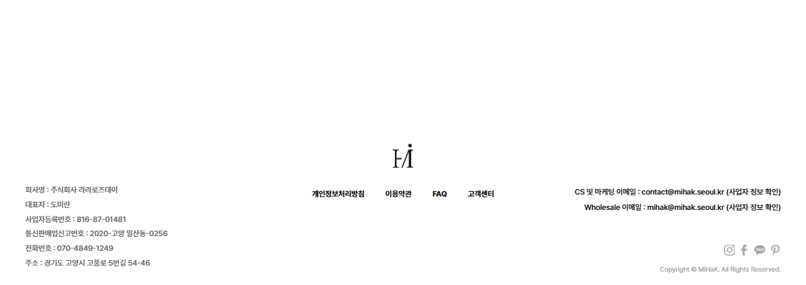
메인에는 기존 로고를, 푸터에는 축약된 심볼을 사용해 정제된 마무리를 구성했습니다. 축약된 로고를 중앙에 배치해 간결한 형태 속에서도 브랜드의 중심을 유지했습니다.
Eau de Noir Perfume Stick
진주에서 착안한 시각적 구조를 적용해 향의 구조와 변화를 풀어낸 제품 상세 페이지입니다. 이미지 전환과 노트 구성, 흐름 중심의 레이아웃을 통해 보이지 않는 향을 직관적으로 인지할 수 있도록 구성했습니다.

진주를 모티브로 한 원형 구조를 상단에 배치하고, 내부 이미지를 ‘고요한 숲’에서 ‘스모키 우드’로 전환해 향의 변화를 표현했습니다. 머스크를 은유한 배경 위에 메인 노트를 선형 흐름에 따라 좌우로 교차 배치해 향이 확장되는 과정을 풀어냈습니다.
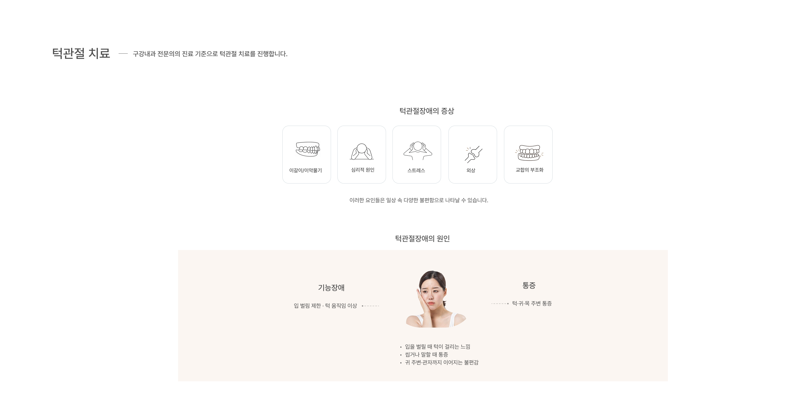
향을 바르는 행위를 중심으로, 간결한 사용 방식과 함께 제품 경험을 전달하도록 구성했습니다. 손목 위에 ‘Perfumed Life Manner’ 슬로건이 등장하고 사라지는 연출을 통해 향을 ‘입는 태도’로 확장되는 개념을 자연스럽게 환기시켰습니다. 손목에 착용된 진주 오브제를 제거해 시각적 요소를 최소화하고 제품에 집중된 구성을 유지했습니다.
브랜드의 분위기와 메시지를 흐름 있는 경험으로 연결합니다.
I interpret and structure brands, transforming them into meaningful digital experiences.
단국대학교 (천안) 일본어전공 (2025.02)
Replit 기반 앱 인터페이스 구현 및 구조 설계 (Team)